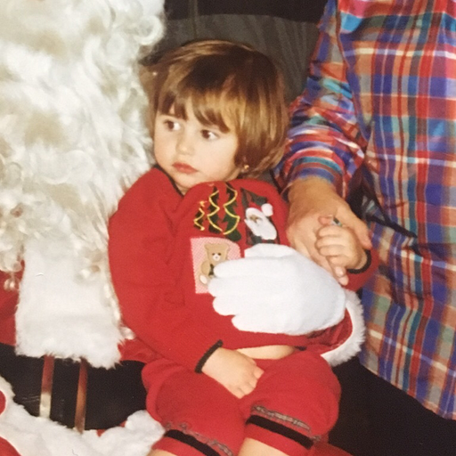
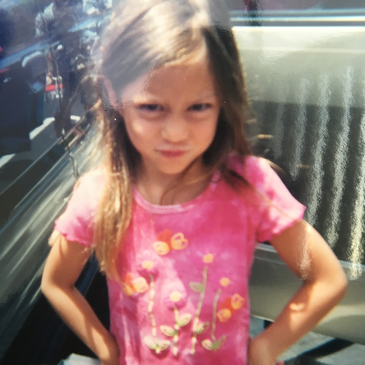
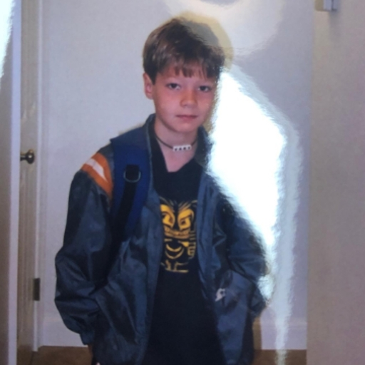
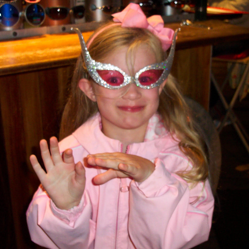

About M(US)E
Like we talked about today, we will be meeting every Tuesday at 3pm in the Seminar Room in the Music Library (located on the second floor in the back left corner). However, if there are any changes to this or any other important announcements, we will likely be posting them in the Facebook group, so please make sure you join that soon. We'll try not to be annoying.
Please also make sure to follow us on Spotify for playlists from our members, as well as a log of every song we listen to in our weekly listening meet-ups. If you'd like us to include a playlist that you curate yourself, please let us know and we'd be happy to do so. Please make sure to tell your friends about our playlists as well, even if they can't make it to the meetings. Keep in mind that a personally curated playlist is optional, but we highly encourage participation!
Editorial Board
Alana Chester
Alana Chester
Managing Editor
Karen Thantrakul
Karen Thantrakul
Review Editor
Joshua Clarke
Joshua Clarke
Technical Editor
Olivia Slaby
Olivia Slaby
Technical Editor